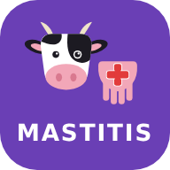

Mastitis Herd Analytics
ระบบสรุปข้อมูลโคเต้านมอักเสบ · One Stop Dairy Farm
กำลังเชื่อมต่อฐานข้อมูล…
+
บันทึกด่วน
1
ฐานข้อมูลโค & ผลเพาะเชื้อ
2
บันทึกโคป่วย
3
ความเสี่ยงระดับฝูง
4
สรุปรายตัว
5
สรุปรายฝูง
⚙
ผู้ใช้

Mastitis Herd Analytics
One Stop Dairy Farm · เข้าสู่ระบบเพื่อบันทึกข้อมูล
อีเมล
รหัสผ่าน
เข้าสู่ระบบ
ลืมรหัสผ่าน
เปิดโหมดทดลอง (ข้อมูลตัวอย่าง ไม่บันทึก)